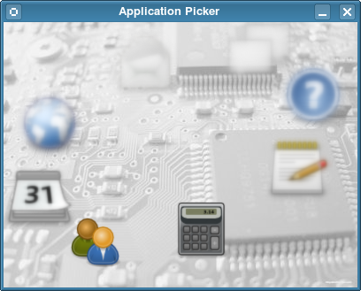

Blur Picker Effect Example
Demonstrates how to apply graphical effects on items in the view.

The Blur Picker example displays a circle of application icons. All icons are blurred, except the one on the bottom left side of the screen, which is the one in focus. Clicking anywhere on the left side of the screen moves the icon circle clockwise to the next icon Clicking on the right side advances the circle counterclockwise.
See also QGraphicsBlurEffect.